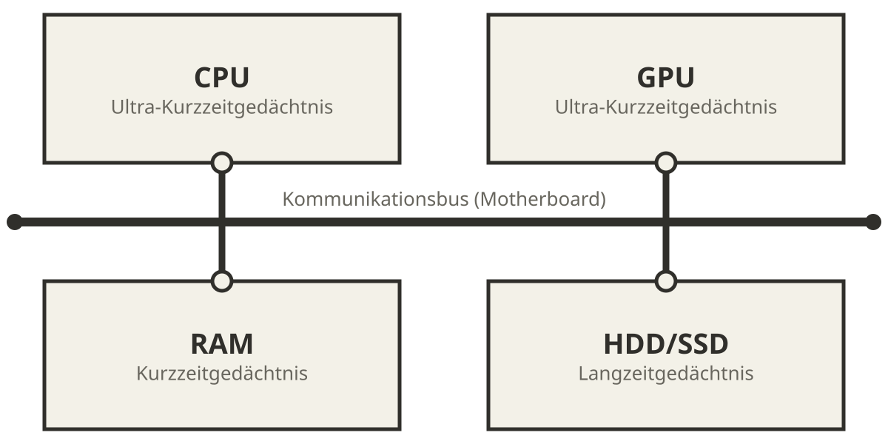
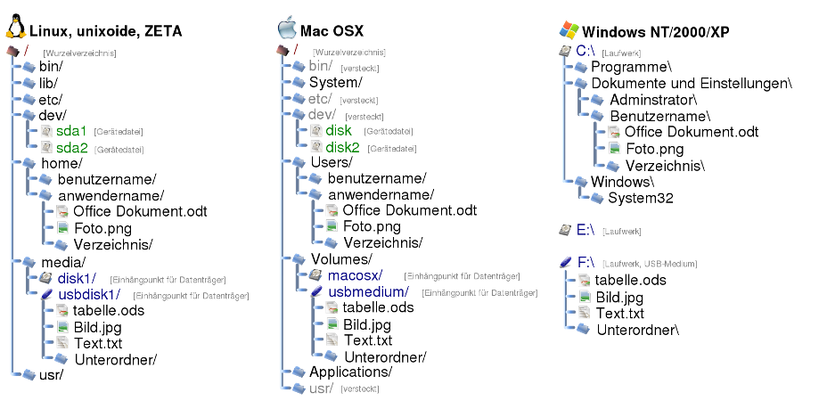

Datenhaltung
Joern Ploennigs · AI4SC
Midjourney: Librarian, ref. Giuseppe Arcimboldo
Hörsaalfrage
Eine Messstation exportiert CSV. Ein GIS liefert GeoJSON. Ein BIM-Tool liefert IFC-JSON. Woran erkennt ihr, wie Python die Datei korrekt lesen muss?

Dateien als Eingangskanal
Dateien sind Ankunftspunkte für Fachdaten
- Dateien sind nicht nur “Speicher”
- Dateien sind die Form, in der Werkzeuge Daten an uns übergeben
- Das Format wird oft vom Ursprungswerkzeug bestimmt
- Unsere Aufgabe: lesen, verstehen, prüfen, weiterverarbeiten
Engineering-Szenario 1: Messdaten aus dem Feld
Monitoring-Station
- Zeitreihen als
CSV - Oft
;statt, - Fehlwerte als
-9999oder leer - Umlaute in Kopfzeilen sind möglich
Fragen vor dem Einlesen
- Welche Kodierung?
- Welches Trennzeichen?
- Hat die Datei eine Kopfzeile?
- Wie sind fehlende Werte markiert?
Engineering-Szenario 2: Modelle aus anderen Werkzeugen
GIS / Umweltinformatik
- Geometrien oft als
GeoJSON - Struktur ist verschachtelt
- Attribute liegen in
properties
BIM / Planung
- Modelle als
IFC, XML oder JSON-Varianten - Große Dateien, viele Objekte
- Fachlogik steckt im Format
Speicher und Dateisysteme
Wo liegen unsere Daten?
Smartphones und Tablets
- App-bezogene Datenhaltung
- Starke Kapselung
- Wenig direkte Dateisicht
Desktop-PCs
- Dateien in Ordnerstrukturen
- Direkte Arbeit mit Pfaden
- Typisch für Python-Skripte
Web- und Cloudsysteme
- Daten verteilt auf Servern
- Häufig Datenbanken im Hintergrund
- Dateien oft nur Import/Export-Schnittstelle
Speicherhierarchie im Computer

- Register und Cache: sehr schnell, sehr klein
- RAM: schnell, aber flüchtig
- SSD/HDD: langsam im Vergleich, aber dauerhaft
- Dateien liegen im permanenten Speicher
Von RAM zu Datei
Während das Programm läuft
- Variablen im RAM
- Daten können verändert werden
- Inhalt geht beim Ausschalten verloren
Wenn Daten bleiben sollen
- Schreiben in Dateien
- Organisation über Dateisystem
- Identifikation über Pfad und Dateiname
Dateisysteme organisieren Dateien
Desktop
- Hierarchische Ordnerstruktur
- Gut für viele unterschiedliche Dateien
- Schnell unübersichtlich
App- und Cloud-Kontexte
- Stärker gekapselt
- Mehr Sicherheit
- Weniger direkte Kontrolle

Python und Dateisysteme
open()für direktes Lesen und Schreibenosundpathlibfür Pfade, Listen, Existenztests- Textdateien oft zeilenweise lesen
- Binärdateien als Bytes behandeln
Dateien mit Python
Dateien lesen und schreiben
Lesen
open(path, "rt")- mit
withautomatisch schließen read(),readlines(), Iteration über Zeilen
Schreiben
open(path, "wt")write()überschreibt im Modusw- für Binärdateien:
rbundwb
KI-generierter Code: Was macht dieser Block?
- Welchen Datentyp hat
text? - Für welche Dateitypen ist das passend?
- Was würde bei einer Binärdatei schiefgehen?
Auflösung
textist einstr- Passend ist das für Textdateien wie
csv,json,xmlodertxt - Bei Binärdateien würden Bytes als Text fehlinterpretiert oder schon beim Dekodieren Fehler entstehen
Dateien prüfen, auflisten, löschen
Formate: Text oder Binär?
Text
- Als Zeichen lesbar
- Gut debugbar
- Beispiele:
txt,json,xml,csv
Binär
- Als Bytes gespeichert
- Kompakter oder softwaregebunden
- Beispiele:
xlsx,zip, Bilder, Videos
Fachformate verstehen
Typische Formate für Ingenieurdaten
Geometrie
- DWG, DXF, IFC
- GeoTIFF, Shapefile
- GeoJSON
Attribute
- CSV
- XLSX
- JSON
Struktur / Austausch
- XML
- JSON
- ZIP als Container
JSON: strukturierte Objekte
GeoJSON: Geometrie plus Attribute
XML: Markup mit Tags
CSV: Tabellen und Messwerte
- Sehr einfaches Tabellenformat
- Eine Zeile pro Datensatz
- Trennzeichen nicht immer Komma
- Deutsche Daten nutzen oft
;
Zeit;Pegel;Status
08:00;2.41;ok
09:00;;wartung
10:00;2.55;okXLSX und ZIP: Container statt Klartext
XLSX
- Excel-Arbeitsmappe
- Für Menschen komfortabel
- Intern mehrere XML-Dateien
ZIP
- Verpackt viele Dateien in einer
- Kann Inhalte komprimieren
- Auch Fachformate nutzen ZIP als Hülle
Ein Skript, drei Formate
import json
import pandas as pd
import xml.etree.ElementTree as ET
messung = pd.read_csv("messung.csv", sep=";", encoding="latin-1")
with open("stationen.geojson", "rt", encoding="utf-8") as fi:
geo = json.load(fi)
xml_baum = ET.parse("station.xml")
xml_wurzel = xml_baum.getroot()
print(messung.head(2))
print(geo["features"][0]["properties"]["name"])
print(xml_wurzel.findtext("name"))CSVlesen wir tabellarisch mitpandasGeoJSONlesen wir als verschachteltes JSON-ObjektXMLlesen wir über Tags und Elemente
KI-Verifikation beim Datei-I/O
Wenn KI Dateicode erzeugt: typische Fehlannahmen
Das Modell nimmt oft an
- UTF-8-Kodierung
- Komma als Trennzeichen
- Erste Zeile ist Header
- Fehlwerte sind leer
Engineering-Daten sind oft anders
latin-1oder Windows-Kodierung;oder Tabulator- Metazeilen vor dem Header
-9999,NA,---
Verifikation mit pandas
- Erst kleine Probe lesen
- Kopfzeile und Datentypen prüfen
- Fehlwerte sichtbar machen
KI-Code-Reading: Wo kann dieser Vorschlag scheitern?
- Stimmt das Trennzeichen?
- Stimmt die Kodierung?
- Ist Zeile 1 wirklich der Header?
- Werden Fehlwerte korrekt erkannt?
Agentic Workflow für Datei-I/O
Agentic workflow: Wenn KI Code zum Einlesen von Dateien erzeugt: 1. Prüfe zuerst Kodierung und Trennzeichen. 2. Kontrolliere Header-Behandlung und fehlende Werte. 3. Teste auf einer kleinen echten Stichprobe vor dem Gesamtdatensatz. 4. Präzisiere den Prompt mit Formatwissen aus dem Ursprungstool.
Mini-Checkliste vor dem Vollimport
Fachlich
- Welches Tool hat die Datei erzeugt?
- Welche Struktur erwarte ich?
- Was bedeutet ein fehlender Wert?
Technisch
encodingsepheaderna_values
Grenzen von Dateien
Dateien sind praktisch, aber begrenzt
Stärken
- Einfach austauschbar
- Direkt sichtbar
- Gut für Import/Export
Grenzen
- Gleichzeitiger Zugriff schwierig
- Versionierung und Konsistenz mühsam
- Suchen, Filtern, Verknüpfen schnell aufwendig
- Deshalb reichen Dateien für gemeinsame, wachsende Datenbestände oft nicht mehr aus
Ausblick
- In
11b_UIDesignlesen Dashboards Daten aus Dateien oder APIs ein - In
12b_Datenbanktypensehen wir, warum Dateien allein oft nicht reichen - Später folgen relationale Datenbanken als robustere Mehrnutzer-Lösung
Lesson Learned
- Dateien sind der übliche Eingangskanal für technische Daten
- Formatwahl ist eine Modellierungsentscheidung
- Textformat heißt nicht automatisch “einfach”
- KI-generierter Dateicode muss immer an echten Beispieldaten verifiziert werden
Questions

Ingenieurs-
Informatik